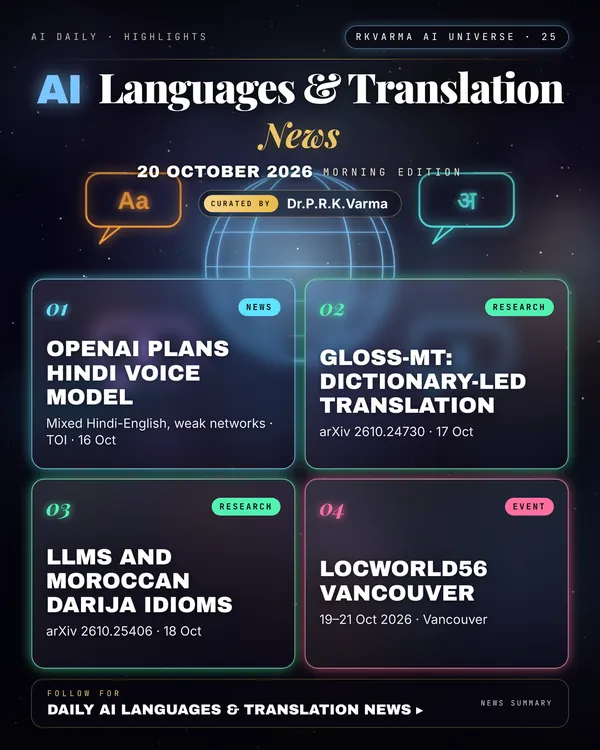

Latest updates · 20 October 2026
In the full issue →OpenAI plans a Hindi-tuned voice model for ChatGPT built for mixed Hindi-English speech and patchy connections, as research tests dictionary-controlled translation for low-resource languages.
Research, industry & policy
- OpenAI plans Hindi-tuned voice model (India), Times of India · 16 Oct 2026: The model would bring India-first features to ChatGPT on Android, including mixed Hindi-English use and support for intermittent internet.
Journals & preprints
- GLOSS-MT: Controllable Low-Resource Machine Translation with an Editable Dictionary, arXiv 2610.24730 · 17 Oct 2026: Adapting a pretrained machine translation (MT) model to new terminology usually requires new parallel data and another round of fine-tuning, which is costly for low-resource languages.
- Towards Figurative Language Understanding in Moroccan Darija: An Evaluation of Large Language Models, arXiv 2610.25406 · 18 Oct 2026: Figurative language remains a major challenge for Machine Translation (MT) systems, as the intended meaning of such expressions often goes beyond literal translation.
Conferences, workshops & events
- LocWorld56 Vancouver, 19–21 Oct 2026 · Vancouver: Under way: AI at scale and human governance of AI localisation workflows.
- Translating Europe Forum 2026, 11–13 Nov 2026 · Brussels: Multilingualism, translation and language-based AI services.
- SPELLL 2026 – Speech & Language Technologies for Low-Resource Languages, 17–19 Dec 2026 · Coimbatore (Amrita Vishwa Vidyapeetham) and hybrid: Language AI for low-resource languages.
Why it matters
Voice in Indian languages, including code-mixed speech, is how AI reaches the next several hundred million users.

